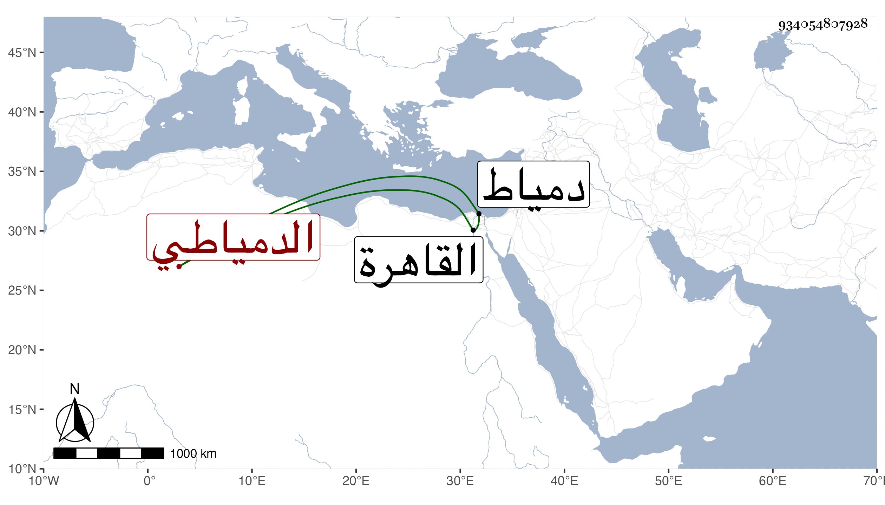

0902Sakhawi.DawLamic.ITO20230111-ara1.EIS1600.934054807928
Biography ID: 934054807928
1233
يوسف بن عمر الدمياطي . كان أبوه من مقدمي أجنادها ثم هو من أجنادها ويتكسب مع ذلك بالخياطة فلما أرسل بالأمير تمراز إليها نزل في بيت كان مضافا لهم يعرف بالفرسيسي فقامت أمه بخدمته أتم قيام وكان هذا أيضا يخدمه بالخياطة وغيرها فلما عاد الأمير إلى القاهرة صارت الأم هي المرجع في بيته وترقى ابنها عنده حتى عمله خازندارا وتمول جدا وصارت له في دمياط الأملاك والسمعة وبعد مدة حصل له ثقل في لسانه كأنه ابتداء فالج فأحضر له الأطباء إلى أن عجز واقتضى رأيه أن استأصل ما كان معه وصار بعد ذلك العز وركوب الخيل يمشي مع عجزه وعدم تمكنه إلا بالاستناد للحائط ونحوه فسبحان المعز المذل .
